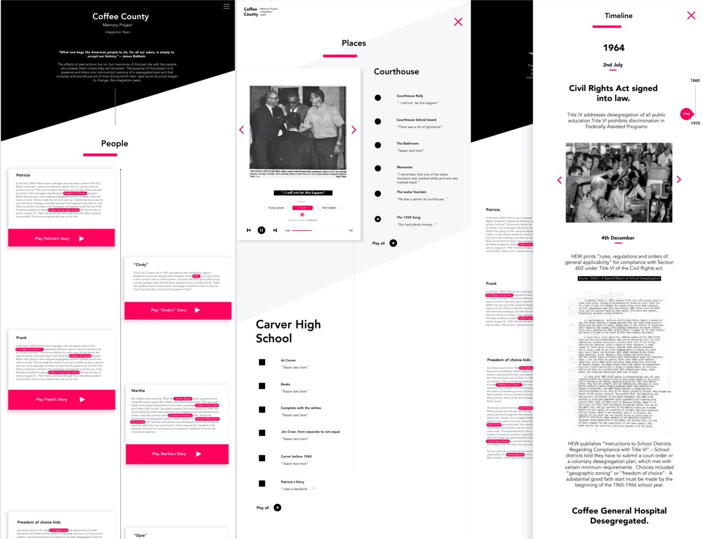

Integration Years - Web Exhibit
UXD & Visual Design — Jan'19 - May'19 — My Role — Experience Designer
Designed for Digital Integrative Liberal Arts Center
Overview
Introduction
My client was a historian and a storyteller who had documented the history of integration years in a small county in Georgia. The major source of historical documentation included audio interviews, newspapers and photographs. The client wanted to create an exhibit out of the collected materials to preserve the history of integration years.
Design Brief
How might we help people of "X" county, remember, tell and reconcile their own stories of school intergration and the civil rights movement?
Process

Discovery
Literature Review
Being an outsider, the biggest concern was to be in the right frame of mind, learn as much as possible, and be able to do justice to the storytelling. Especially when we are telling someone else’s story, even though our role is limited to creating the experience and not the content, as a designer we do get to decide how that story will be told. In this regard, apart from historical study about Lester Maddox, Integration Years, Civil Rights Movement etc, I also studied Dr. Nassim Parvin's essay on Doing Justice to Digital Storytelling.
Client Meeting
First meeting with the client helped us understand the design brief and flesh out the goals.

Comparative Study
It was extremely hard to find anything similar on the web, but I tried to critique and analyse a few historical projects to understand the do's and dont's.


Ideation & Design
Understanding the Content, Stories and People
I started with understanding the archive first. It was massive and unstructured. So we decided first to structure it and understand the various materials.

Information Architecture

Wireframes

Mid-fidelity prototype and client briefings
We had weekly meetings with the client, and she being a storyteller, I wanted to keep her in loop with every design decision and where we were headed. To begin, with I had two variations of the design which we critiqued and made iterations to.


Feedback and Design Critique
While discussing various topics with the client, I found that the topics were nothing but places in the county. And in the context of the county itself, the term "topic" seemed diminutive. Hence we decided to rename "topics" to "places". This also gave a better sense of history for the county- "People", "Places" and "Historical Timeline". The term Gallery also seemed devoid of emotion and turned history into an object, hence, it was chanegd to "In Pictures". To arrive at these design decisions, I conducted a critique session with 3 Digital Media Scholars and Researchers.

Final Design
01 People
02 Stories

02 Timeline
Dean Showcase with the client
Learnings
Thinking about interface design, the current design gives a lot of space visual space for the audience to wander away and not be fully immersed. By visual space, I mean the empty white space that we have right now which leans more towards an archive rather storytelling. Although it was for the firs roll out, rethinking through it, a good starting point would be to begin from the emotions we want to evoke, for digital storytelling.
As all of this comes with a risk of trying to re-inventing the wheel, to avoid late realisations, I learned that it is very important to have a framework grounded in the theoretical understanding of digital humanities and storytelling. Maybe we need more art than the design or think of ourselves, not as designers but artists whose canvas is an electronic screen and a keyboard, maybe we need to change our vocabulary to enable us to think beyond human-computer-interaction, where the medium doesn't become bigger than the message. More than anything, these are the thoughts that need to be carefully evaluated and understood before we jump into making and doing.